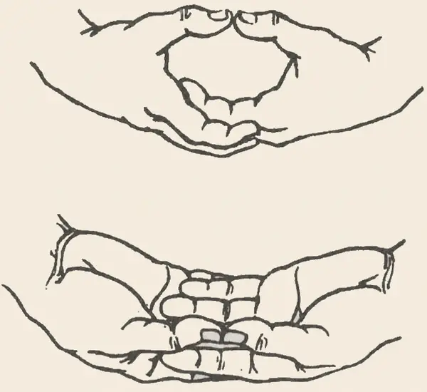
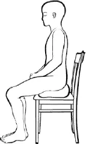

Background
To begin meditating, you need to do only two things: choose a posture you can maintain and choose a suitable meditation object. Meditation is built around two core principles which, over the centuries, have proliferated through teacher-student transmission into a bewildering array of practices:
- Concentration
- Mindfulness
Concentration means gathering attention around a single object. Mindfulness involves remembering, observing, and clearly knowing thoughts, feelings, bodily states, and other aspects of experience. Different techniques have developed to suit different temperaments and circumstances, and to cultivate concentration, mindfulness, tranquillity, insight, and, in some traditions, supramundane powers.
It is often said that meditation is simply about living in the present moment. This is incomplete. Buddhist mindfulness includes remembering what one is doing, recognising what has arisen, and understanding experience in relation to the teachings.
Posture
Choose the position in which you can remain both alert and reasonably comfortable. There is no need to treat a particular arrangement of the feet and legs as spiritually superior. What matters most is what you do with the mind. There is little value in looking impressive if the posture cannot be maintained. Be realistic, experiment, and discover what works for your body.
Hand position
The classic hand position is the meditation mudra, or dhyāna mudrā. The right hand rests on the left, with the tips of the thumbs lightly touching. It can act as a rough “effort meter”: the thumbs may drift apart during daydreaming or press together when one is straining.

Full lotus
For those flexible enough to use it without strain, the full lotus is highly stable and symmetrical. Each foot rests on the opposite thigh. Do not force the legs into this position.
Half lotus
In half lotus, one foot rests on the opposite thigh and the other leg is tucked underneath. If you use this posture regularly, alternate which leg is uppermost to avoid repeatedly loading the body to one side.
Burmese position
In the Burmese position, both lower legs rest on the floor without one ankle being crossed over the other. Ideally, both knees are supported. Sitting on a firm cushion, often called a zafu, raises the hips and may allow the knees to descend naturally. Keep the spine upright without flattening its natural curves.
Chair position
It is perfectly acceptable to sit on a chair. Sit upright rather than rigidly, with both feet supported by the floor. If needed, place a cushion behind the lower back or beneath the feet.

Cushions and mats
A mat can protect the knees and ankles from a hard floor. A firm sitting cushion raises the pelvis, helping the spine remain upright and reducing strain on the hips and knees.
Eyes and wall-gazing
Zen meditation is sometimes called wall-gazing. Facing a plain wall and keeping the eyes softly open or half-closed can reduce visual distraction. Let the gaze rest without staring.
Mindfulness of breathing
Mindfulness of breathing, or ānāpānasati, refers to several ways of keeping awareness with inhalation and exhalation.
Exercise one: counting after the out-breath
Breathe naturally through the nose. After breathing out, count one. Continue to ten, then begin again. Some practitioners use longer cycles, but counting to ten is usually simpler and makes wandering easier to notice.
Keep the eyes softly open or half-closed. Thoughts, noises, and bodily sensations will draw the mind away. When you notice this, acknowledge the distraction without judgement and gently return to the breath.
Exercise two: counting before the in-breath
Count immediately before breathing in, anticipating the breath that is coming. Continue from one to ten, then begin again.
Exercise three: following the breath
Drop the counting and observe the breath as it comes in and goes out.
Exercise four: attending at the nose
Narrow the focus and attend to the subtle sensations around the nostrils or upper lip where the breath is most clearly felt entering and leaving the body.
When thoughts arise
The aim of meditation is not to stop thoughts. In advanced states of concentration, discursive thought may become very quiet or cease for a time, but this cannot be forced and should not become an immediate demand.
Until concentration is well developed, thoughts will arise. A successful session is one in which you stay with the meditation object for at least some of the time. Every second of collected attention matters, even while the mind sings, plans conversations, worries about a numb leg, or invents dinner.
If you stay with the object despite distraction, you are building meditative skill and resilience. If concentration is lost, return. Noticing that you have wandered is itself the moment in which awareness has returned.
The focus is the thing. One second is good; two seconds are better. The aim at this stage is not to abolish thinking or reside in a transcendental state, but to remain with the meditation object for as long as you reasonably can. With a non-judgemental attitude, concentration strengthens and scatteredness gradually gives way to focus.
Meditation objects beyond the breath
Other traditional objects include coloured discs called kasinas, contemplations of foulness, loving-kindness, perceptions, and immaterial states. They serve different purposes and suit different temperaments. Most advanced objects are best practised under an experienced teacher.
Contemplation of foulness has traditionally been used as an antidote to sensual greed, while loving-kindness meditation may help someone caught in anger and hatred. Some practices principally develop concentration or mindfulness; others develop both. Mindfulness of breathing is one practice capable of developing both and holds an important place across several Buddhist traditions.
Mindfulness and Buddhism
Mindfulness is central to the teachings attributed to Śākyamuni Buddha. In SN 48.10, the Buddha describes the faculty of sati as the ability to remember what was done and said long ago, together with sustained contemplation of body, feelings, mind, and mental qualities.
Mindfulness may also involve keeping future certainties in mind. AN 6.19 recommends mindfulness of death, a practice directed towards something that has not yet happened. This is possible because sati includes remembering and keeping something present to the mind, rather than merely inhabiting the current instant.
In the Satipaṭṭhāna Sutta, mindfulness enables the practitioner to remember the relevant categories of the teaching and to understand a feeling in relation to a wider range of skilful and unskilful states (Gethin, 1992; Sharf, 2014, p. 942).
Breathing in long, he discerns, “I am breathing in long”; or breathing out long, he discerns, “I am breathing out long.” Or breathing in short, he discerns, “I am breathing in short”; or breathing out short, he discerns, “I am breathing out short.” He trains himself to breathe in and out sensitive to the entire body, and to calm bodily fabrication.
This passage from the Ānāpānasati Sutta illustrates how attention to breathing develops beyond mere counting into sensitivity to the body and the calming of bodily activity.
Koan and hwadu
There is debate within Zen about whether koan practice is a more effective meditation object than the breath, and some teachers regard it as the fastest route to awakening. One advantage is that it can continue during ordinary activity rather than being confined to seated meditation.
In some Zen traditions, students work through a curriculum of koans. In Korean Zen, practice commonly centres on a single hwadu, such as “Who am I?” or “What is this?”, sustained until great doubt becomes concentrated and divergent thinking falls away. Other teachers emphasise keeping a “don’t-know mind”, or say that life itself presents a question which must arise from within.
Koans are paradoxical, but they are not ordinary riddles. They cannot be resolved by discursive reasoning alone. Their purpose is to exhaust habitual conceptual responses and open a different way of seeing.
Unusual experiences
Unusual experiences can occur during or after meditation. These may include altered bodily sensations, vivid imagery, feelings of leaving the body, or experiences interpreted as encounters with ghosts or spiritual beings. Whatever interpretation one gives them, they are not in themselves the goal of Buddhist practice. Do not chase them or build an identity around them. Discuss persistent or troubling experiences with an experienced Buddhist teacher.
Difficult experiences
The importance of an experienced, knowledgeable, and trustworthy teacher is especially clear when difficult experiences arise. Meditation may uncover thoughts, memories, and emotions that have long been avoided. Without appropriate support, this can produce unnecessary suffering.
If meditation becomes frightening or destabilising, stop or reduce the practice and seek appropriate support. A trustworthy teacher can help with meditation, while serious or persistent anxiety, trauma responses, dissociation, or other psychological distress may also require a qualified mental-health professional.
Advanced practice
Advanced meditation grows from the foundations already described. The Sutra of Perfect Enlightenment presents concentration and mindfulness separately and in combination as paths of practice. The methods outlined here are therefore not disposable preliminaries. As practice deepens, more will be discovered, but concentration and mindfulness remain fundamental.
Further reading
I recommend Ōmori Sōgen’s An Introduction to Zen Training, a translation of Sanzen Nyūmon. It addresses breathing, pain, posture, drowsiness, and the maintenance of concentration both in and outside seated meditation.
I also recommend Ajahn Brahm’s Mindfulness, Bliss, and Beyond, available in print and as an audiobook.